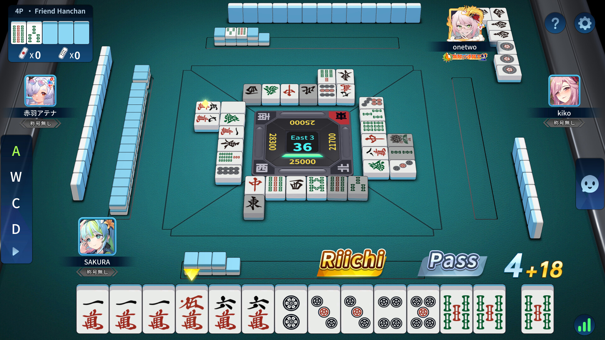
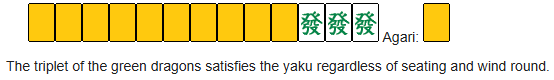
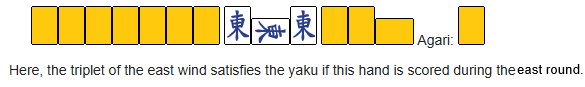
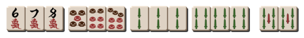
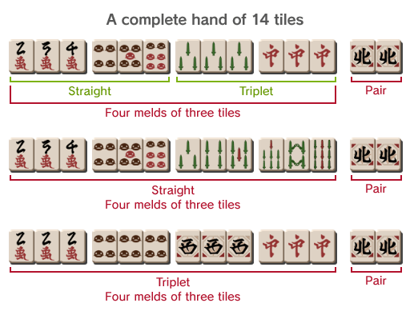
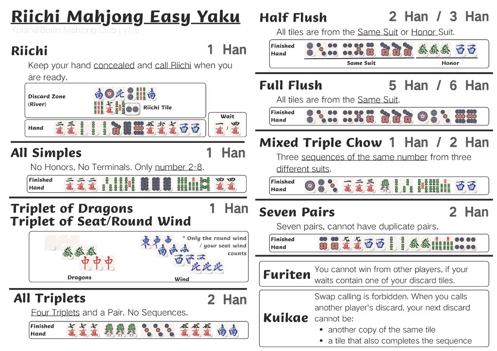

A beginner-friendly guide to learning Riichi Mahjong, designed so the very new beginner can learn easily and get right to playing, most importantly having fun!
Riichi Mahjong is a table game played with four players using a set of 136 tiles. Each player acts counter clockwise and tries to build a winning hand by drawing and discarding tiles. What makes Riichi Mahjong unique is that you can use special rules to take tiles from other players such as Pon - forming a triplet, and Chi - forming a sequence from the player on your left. In addition winning hand's have different point values similar to the card game Poker. And so there is strategy in how to form your hands, when to open or close your hand which we will cover later, and gaining proficiency in discarding and claiming tiles. Quick note, electronic tables and video game variants typically auto align the tiles standing facing you for privacy.
To learn more about the rules, visit our Rules Overview page.
Riichi Mahjong uses three main suits of tiles. While many locations may slightly alter the appearance of tiles they always fall into Characters, Dots/Circles and Bamboo. Each is numbered 1 through 9. This makes it easy to recognize especially in electronic forms such as browser or video game play, and in person they are often labelled to be recognized. In addition to these, there are honor tiles. Four called Winds, in compass directions of East, South, West, North. And three dragons that are called the color they appear. Red, Green, White. We will go more into depth in the next section about Yaku which is what is required to actually make a full winning hand. Now that you understand some of the basics lets cover how the game is played starting with the overall objective.
The objective is to make a legal winning hand by creating a (Yaku) and either drawing tiles or claiming other player's discarded tiles
To start with each player is given 13 random tiles. On a player's turn they draw a 14th tile. You would look at your tiles and determine if it is better to discard the new tile, or to discard a tile in your hand replacing it with the new tile. In doing so you really always have 13 tiles until the end of the game. Forming melds, that is pair's, triplet's or sequences allow you to begin to form one of the many winning legal hands. If it sounds complicated please don't be concerned. Let's show how that looks with photo's and here in text.
Doman tiles are the style of tiles used in the video game Final Fantasy 14. This is to show how despite Riichi Mahjong looking slightly different depending where you play, once you understand the tiles and rules you can play regardless.
As you can see as long as you can count to 9, know NSEW compass directions, and can see Red and Green dragons (the white dragon is often a blank tile in appearance) you can play the game. Just with what's above you now have enough understanding to be able to literally jump into a game, but of course we need to actually cover these ellusive Winning Hand's. In the next section we will cover what that looks like as well as Yaku which make a hand able to become a Winning Hand.
For a full breakdown of tile types, visit our Tile Guide
In Riichi Mahjong, you can't win with just any hand, for it to be a legal winning hand it must include at least on Yaku. A Yaku is a specific pattern or condition that makes your hand valid for winning. Similarly to Poker where you need certain combination of cards, in Riichi Mahjong you want to create valid combinations. There's all manner of Yaku's, however in my opinion it's best to learn and play towards a specific 3 in every game and only deviate when you both learn new Yaku and see that your hand is close to a more complex Yaku.
Before we cover these three Yaku I should explain the concept of an open vs closed hand. A closed hand simply means you have not called Pon or Chi. No one can see your tiles at all but you also most purely rely on whatever tiles you draw and discard to make your melds. An open hand is the contrary, you have called Pon or Chi and those tiles are placed to the side face up. Everyone knows you called it and what meld you created as a result of that call. The significance of having an open or closed hand is this, certain Yaku can only be created with an open or closed hand. For example our first Yaku we will cover, Riichi, is only able to be called if you have a closed hand.
Riichi can be called when you are one tile away from a winning hand. It must be a closed hand as well. As an example
Here you've got 13 tiles. To win this hand you would need either a 3 or 6 of dots/circles as your 14th tile. You would be able to call Riichi which would indicate you only need one tile left to win, then the game continues with other player's taking their turn. If another player discards 3 or 6 of dots/circles you would call Ron, and take it. You'd also win if you naturally drew one of those tiles. In either case Riichi gives a Yaku and thus your hand automatically becomes a legal hand.
The second beginner friendly Yaku is Yakuhai. It can be open or closed hand. The above example also includes a Yakuhai, which is also another yaku. Yakuhai is when you either have 3 Dragon tiles, or you have 3 Wind tiles that match the round name. In each round it'll be visible and labeled, for example East round. So if you get 3 East wind in an east round that counts as Yakuhai. A final way to get Yakuhai is based on your seat wind so if you are in the south seat and get 3 south Winds that also counts.
 The final beginner friendly Yaku is Tanyao. Tanyao is only tiles between 2-8, without including honor tiles. It can be open or closed hand.
Here you can see there are no dragon or wind tiles known as Honor tiles. And there are no terminal tiles which are 1 and 9.
To explore common Yaku, visit our Yaku Guide
Remember! The goal of playing is to make a Yaku -> Use that Yaku to make a Winning Hand
With just what we've talked about so far you can take the knowledge and play a game successfully right now. But practice, and getting more visuals can often help reinforce this knowledge. It also helps to think ahead and start to recognize hands. The thing with Riichi Mahjong is while you can play in a variety of sources and locations, you usually cannot always sit there playing the game. But a good way to practice is by writing them out and thinking of how hands look. Lets go through quick examples.
So your goal on every start of game is to identify
It may feel confusing at first but when you focus on the end goal of reaching a Yaku everything comes into place
